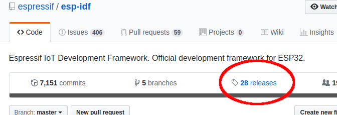

This post is part of a series of ESP32 blog posts. Look the index here
Introduction (sort of)
The ESP32 was originally conceived by espressif a multinational company with headquarters in Shangai, focused on developing cutting-edge WiFi-and-Bluetooth, low-power, IoT solutions. Among our popular products are the ESP8266 and ESP32 series of chips, modules and development boards.
The ESP32 can be programmed in several ways, among the languages and platforms supported the most popular are,
- MicroPython a python implementation for embedded
systems.
- Arduino IDE the IDE for Arduino platforms.
- NodeMCU a platform to program embedded systems
using Lua.
- PlatformIO a project which aims to
provide an unified development tool for embedded systems.
- Espressif esp-idf Espressif IoT Development Framework. Official development framework for ESP32. I’ll be using this.
Getting a working Espressif esp-idf environment
This part is based on the official instructions by espressif.
The installation process consists of two steps,
- Setting up the toolchain.
- Setting up the Espressif esp-idf from github.
To get the esp-idf, head to https://github.com/espressif/esp-idf,
click the releases button and download the latest release available.

Now install some prerequisites to the build process,
sudo apt-get install gcc git wget make libncurses-dev flex bison gperf python python-serial
Now, a recommended place to install the esp-idf is the path $HOME/opt/esp. In
order to simplify the install process, declare the following variable,
export ESP_PATH=$HOME/opt/esp
And create the required destination directory.
mkdir $ESP_PATH
Getting the toolchain
The toolchain can be obtained by one of two ways,
- Building from source. This allows to have a custom toolchain if some
configurations are set.
- Using a precompiled toolchain. This approach is more restrictive, but
straightforward.
I’ve tried both approaches, and found that the later is the simplest way to get a working toolchain.
There are OS specific instructions for Windows, Linux, and MacOS.
As the time of writing this blog, the latest precompiled toolchain could be obtained in Linux by running,
cd $ESP_PATH
wget https://dl.espressif.com/dl/xtensa-esp32-elf-linux64-1.22.0-80-g6c4433a-5.2.0.tar.gz
tar xvfz xtensa-esp32-elf-linux64-1.22.0-80-g6c4433a-5.2.0.tar.gz
Finally, add the toolchain to the $PATH,
export PATH="$PATH:$HOME/opt/esp/xtensa-esp32-elf/bin"
Getting the ESP-IDF
First, we need to define an environment variable pointing to the destination of the esp-idf
export IDF_PATH=$ESP_PATH/esp-idf
Then we can head there and get the latest version of the esp-idf from github
cd $ESP_PATH
git clone -b v3.1 --recursive https://github.com/espressif/esp-idf.git
You can replace v3.1 with the latest tag available in the repository. Now, to
bootstrap the repository,
cd $IDF_PATH
git submodule update --init --recursive
The currently logged user should have read and write access the serial port over USB.
On most Linux distributions, this is done by adding the user to dialout group
with the following command:
sudo usermod -a -G dialout $USER
Make sure you re-login to the shell in order to the changes to take effect (there are other ways to achieve this, but maybe the most universal way is a simple logout)
To test the installation you can run
xtensa-esp32-elf-gcc --version
Testing serial communications
A bunch of blog posts cover the ways in which we can read and write to a serial
port in linux. For example, this blog post shows several options. In linux systems a way
to detect the serial port used by our device is to list the contents of the
tty’s available under /dev with ls /dev/tty*, then connect the ESP32 with
the USB cable and list ls /dev/tty* again. You’ll notice that a new element
appears with the name /dev/ttyS0 or /dev/ttyUSB0 (or any other number like
ttyUSB1, depending on your particular hardware and linux distribution).
Picocom
Picocom is a minimal terminal emulator which can be connected to the serial port. To get it installed just run,
sudo apt-get install picocom
Connect the ESP32. If it is connected to the /dev/ttyUSB0 serial port, you can
check the connection with
picocom /dev/ttyUSB0
esp-idf monitor
esp-idf comes with a serial monitor which can be run with make monitor under
a project’s directory.
The simplest way to check that everything is properly installed is to burn the
hello world included with the esp-idf,
cd $IDF_PATH/examples/get-started/hello_world
And run
make
This compiles the program. To load it to the ESP32, connect it with the USB cable and run,
make flash
Which will take care of everything.
To check the actual hello world, wait until the load is completed and either run
picocom /dev/ttyUSB0
or
make monitor # from within the hello-world proyect folder
You should see something like this,